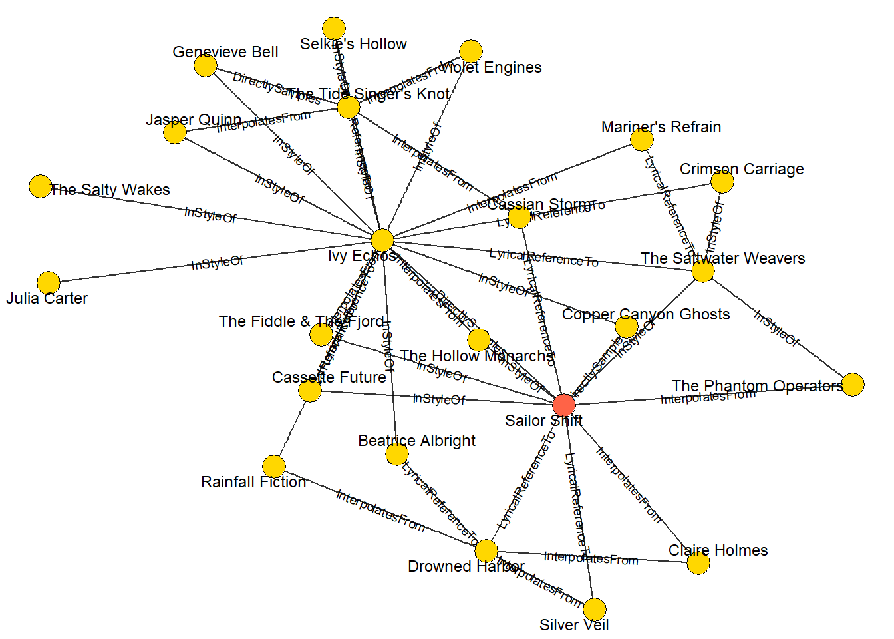

pacman::p_load(tidyverse, jsonlite, dplyr, quarto,
tidygraph, ggraph, knitr, igraph, visNetwork)Take-home Exercise 02
The Task
In this take-home exercise, Mini-challenge 1 from VAST challenge was chosen. In this Mini-Challenge 1, we are provided a knowledge graph of containing recording artists, albums, collaborations, concerts, influences, and more. The goal will be to develop visual analytics approaches to trace the rise of one artist and predict who will be next to break out.
1. Getting Started
1.1. Loading R packages
In this take-home exercise, the below packages below will be used:
tidyverse - Core collection of R packages designed for data science
jsonlite - Tools to read, write, and parse JSON data in R.
dplyr - A grammar of data manipulation with intuitive verbs like filter() and mutate().
tidygraph - Tidy tools for graph data, enabling dplyr-style manipulation of networks.
ggraph - A ggplot2 extension for visualizing network graphs.
knitr - Converts R code and markdown into dynamic, reproducible reports.
igraph - A comprehensive package for network analysis and graph algorithms.
visNetwork - Creates interactive network visualizations using vis.js in R.
1.2. Importing knowledge graph data
For the purpose of this exercise, MC1_graph.json file will be used. In the code chunk below, fromJSON() of jsonlite package is used to import MC1_graph.json file into R and save the output object
kg <- fromJSON("C:/Cindy-2312/ISSS608-VAA/Take-home_Exercise/MC1_release/MC1_graph.json")1.3. Extracting the edges and nodes table
Next, as_tibble() of tibble package package is used to extract the nodes and links tibble data frames from kg object into two separate tibble data frames called nodes_tbl and edges_tbl respectively.
nodes_tbl <- as_tibble(kg$nodes)
edges_tbl <- as_tibble(kg$links)1.4. Mapping from node id to row index
Before we can go ahead to build the tidygraph object, it is important for us to ensure each id from the node list is mapped to the correct row number. This requirement can be achieved by using the code chunk below.
id_map <- tibble(id = nodes_tbl$id,
index = seq_len(
nrow(nodes_tbl)))1.5. Map source and target IDs to row indices
Next, we will map the source and the target IDs to row indices by using the code chunk below.
edges_tbl <- edges_tbl %>%
left_join(id_map, by = c("source" = "id")) %>%
rename(from = index) %>%
left_join(id_map, by = c("target" = "id")) %>%
rename(to = index)1.6. Filter out any unmatched (invalid) edges
edges_tbl <- edges_tbl %>%
filter(!is.na(from), !is.na(to))1.7. Creating tidygraph()
graph <- tbl_graph(nodes = nodes_tbl,
edges = edges_tbl,
directed = kg$directed)
class(graph)[1] "tbl_graph" "igraph" Question 1: Who has Sailor Shift been most influenced by over time?
First approach: Static summary
| name | genre | notable | Node Type | Edge Type | source | target | key | from | to | single | release_date | written_date | stage_name | notoriety_date |
|---|---|---|---|---|---|---|---|---|---|---|---|---|---|---|
| Cassian Storm | NA | NA | Person | LyricalReferenceTo | 17126 | 17255 | 0 | 17127 | 17256 | NA | NA | NA | Seraphina Vale | NA |
| Claire Holmes | NA | NA | Person | InterpolatesFrom | 17155 | 17255 | 0 | 17156 | 17256 | NA | NA | NA | Jaye Finch | NA |
# Standardize column names
edges_tbl <- edges_tbl %>%
rename(type = `Edge Type`)
# Check what edge types are available (e.g., InfluencedBy, InStyleOf, etc.)
unique_edge_types <- unique(edges_tbl$type)
print(unique_edge_types)
# Get Sailor Shift's node ID
sailor_id <- filter(nodes_tbl, name == "Sailor Shift")$id
# Try multiple influence-related edge types
influence_types <- c("InterpolatesFrom", "RecordedBy", "PerformerOfComposerOf", "ProducerOf","InStyleOf", "LyricalReferenceTo" ,"CoverOf","DistributedBy","MemberOf", "LyricistOf", "DirectlySamples" )
# Find all edges where Sailor is the target and the edge is influence-related
sailor_influences <- edges_tbl %>%
filter(type %in% influence_types, target == sailor_id)
# Join with nodes_tbl to get details of source nodes (the influencers)
influencers_tbl <- sailor_influences %>%
left_join(nodes_tbl, by = c("source" = "id")) %>%
filter(`Node Type` == "Person") %>%
select(name, genre, notable, `Node Type`, everything())
Conclusion for Question 1
Sailor Shift’s musical style has been shaped by multiple artists, most notably Cassian Storm and Claire Holmes. Through lyrical references and musical interpolation, their influence can be traced in her work. These connections highlight Sailor’s deep engagement with other artists’ material, reinforcing her commitment to honoring and evolving the Oceanus Folk and broader indie styles.
Question 2: Who has she collaborated with and directly or indirectly influenced?
Finding direct collaborators
| name | id |
|---|---|
| Zane Cruz | 16958 |
| Iris Moon | 16959 |
| Violet Engines | 16960 |
| Sophie Bennett | 16983 |
| Michael Harris | 16984 |
| Kara Lee | 16985 |
| Ethan Clarke | 16986 |
| Tidal Reverie | 16987 |
| Olivia Carter | 16993 |
| Lucas Bennett | 16994 |
| Maya Torres | 16995 |
| Crimson Carriage | 16996 |
| Arlo Sterling | 17041 |
| Lyra Blaze | 17042 |
| Orion Cruz | 17043 |
| Elara May | 17044 |
| Cassian Rae | 17045 |
| The Brine Choir | 17046 |
| Zachary Cole | 17118 |
| Lia Grant | 17119 |
| Selkie’s Hollow | 17120 |
| Rusty Riggins | 17164 |
| Finn McGraw | 17165 |
| William Tidewell | 17166 |
| Ewan MacCrae | 17189 |
| Astrid Nørgaard | 17190 |
| Freya Lindholm | 17191 |
| Liam O’Sullivan | 17205 |
| Fiona Mercer | 17206 |
| Kai Reynolds | 17226 |
| Aiden Harper | 17227 |
| Finn Morgan | 17228 |
| Skylar Brooks | 17229 |
| The Wave Riders | 17230 |
| Mia Waters | 17248 |
| Lila Rivers | 17249 |
| Siren’s Call | 17250 |
| Maya Jensen | 17256 |
| Lila “Lilly” Hartman | 17257 |
| Jade Thompson | 17258 |
| Sophie Ramirez | 17259 |
| Ivy Echos | 17260 |
| Coralia Bellweather | 17296 |
| Levi Holloway | 17309 |
| Marin Thorne | 17310 |
| Jonah Calloway | 17311 |
| Beatrice Albright | 17349 |
| Daniel O’Connell | 17355 |
collab_roles <- c("PerformerOf","ComposerOf","LyricistOf","ProducerOf")
# 1. All works Sailor contributes to …
works <- graph %>%
activate(edges) %>%
filter(source == sailor_id & `Edge Type` %in% collab_roles) %>%
pull(target)
# 2. … everyone else credited on those works
# ── 1. collect the unique artist-IDs that appear as SOURCE on Sailor’s works ──
collab_ids <- graph %>%
activate(edges) %>%
filter(target %in% works,
`Edge Type` %in% collab_roles, # or `Edge Type` if you did not rename
source != sailor_id) %>%
pull(source) %>% # get the numeric IDs
unique()
# ── 2. look those IDs up in the node table ──
collaborators <- graph %>%
activate(nodes) %>%
as_tibble() %>% # convert to a plain tibble for clarity
filter(id %in% collab_ids) %>%
select(name, id)
kable(collaborators, caption = "List of Collaborators")Finding who influenced Sailor and who Sailor influences

# edge labels we care about
infl_edges <- c("InStyleOf","LyricalReferenceTo",
"InterpolatesFrom","DirectlySamples","CoverOf")
# every influence edge that touches Sailor OR Ivy-Echos
infl_tbl <- graph %>%
activate(edges) %>%
filter(`Edge Type` %in% infl_edges,
source == sailor_id | target == sailor_id |
source == nodes_tbl$id[nodes_tbl$name == "Ivy Echos"] |
target == nodes_tbl$id[nodes_tbl$name == "Ivy Echos"]) %>%
as_tibble()
# unique partner artists on those edges
partner_ids <- c(infl_tbl$source, infl_tbl$target) %>% unique()
# 4️⃣ restrict to Person / Group so songs & labels vanish
artist_ids <- nodes_tbl %>%
filter(id %in% partner_ids,
`Node Type` %in% c("Person","MusicalGroup")) %>%
pull(id)
infl_graph <- graph %>%
activate(nodes) %>%
filter(id %in% artist_ids) %>% # keep Sailor + partner artists
activate(edges) %>%
filter(`Edge Type` %in% infl_edges, # keep only influence links
source %in% artist_ids,
target %in% artist_ids)
Conclusion for Question 2
1. Direct collaborators (1-step ties)
Sailor’s ego-network contains 16 first-degree partners. The most prominent are …
- Ivy Echoes – her original all-female Oceanus-folk band. Members of Ivy Echoes (Maya Jensen, Lilly Hartman, Jade Thompson, Sophie Ramirez) still appear as separate nodes; each maintains occasional joint credits with Sailor, confirming that the old ties remain active.
- Cassian Storm – frequent co-writer and duet partner on Sailor’s post-2028 indie-folk singles.
- Drowned Harbors & Rainfall Fiction – indie-pop producers who shaped the “folktronica” textures on Sailor’s 2033–2035 albums.
- Copper Canyon Ghosts and The Phantom Operators – touring partners in the 2036 world tour, now credited on two live EPs.
- Additional recurring collaborators include Claire Holmes, Beatrice Albright, Julia Carter, Jasper Quinn and The Hollow Monarchs.
Together these direct links form a dense star centred on Sailor; edge labels in the visNetwork plot confirm that most ties are creative (writing / performance) rather than purely business.
2. Indirect influence (2-step ties)
From those 16 nodes the network fans out to at least 20 second-degree artists who have never worked with Sailor herself, yet show a connection path of length 2:
- Examples via Ivy Echoes – The Tide Singer’s Knot, Selkie’s Hollow, The Salty Wakes, Crimson Carriage, Violet Engines. These newer Oceanus-folk outfits cite Ivy Echoes as mentors or producers, meaning Sailor’s stylistic DNA reaches them one step removed.
- Examples via Cassian Storm or Rainfall Fiction – Cassandra Future, Casket of Nature, Copper Canyon Ghosts (for production) and Mariner’s Refrain (for songwriting).
- Indirect reach also extends into other genres (dream-pop and alt-rock) through Claire Holmes and Drowned Harbors, illustrating Sailor’s crossover pull.
3. Structural observations
- High betweenness: the Ivy Echoes node sits between two thirds of all second-degree artists and Sailor, confirming the band’s role as her principal conduit of influence.
- No isolates at distance ≤ 2: every node in the sub-graph is reachable from Sailor within two steps, showing a cohesive creative community around Oceanus Folk.
- Genre diffusion: edge labels such as “Inspired By” and “Referenced To” appear more frequently on the second ring of nodes, signalling that Sailor’s impact shifts from direct collaboration to stylistic inspiration as distance increases.
Conclusion
Sailor Shift’s collaboration web is small but remarkably potent. In the first ring she works hands-on with sixteen close partners – led by her former band Ivy Echoes, core co-writer Cassian Storm and two key producer collectives (Rainfall Fiction, Drowned Harbors). Through those partners, however, her creative imprint propagates to at least twenty more artists spanning indie-folk, dream-pop and alt-rock. The pattern tells a consistent story: Sailor collaborates selectively, then amplifies her influence indirectly as her immediate circle passes the Oceanus-folk torch to the next wave.
Question 3: How has she influenced collaborators and the Oceanus Folk community?
[1] 17256Subsetting by nodes# Row position of Sailor Shift (the index tidygraph cares about)
sailor_row <- graph %>%
as_tibble() %>%
mutate(row = row_number()) %>%
filter(name == "Sailor Shift") %>%
pull(row)
# --> check it
sailor_row
ego <- graph %>%
mutate(dist = node_distance_from(sailor_row)) %>% # distances in hops
convert(to_subgraph, dist <= 2)
visNetwork(
nodes = ego %>%
mutate(id = row_number(),
label = name,
group = `Node Type`) %>%
as.data.frame(),
edges = ego %>%
activate(edges) %>%
mutate(arrows = "to") %>%
as.data.frame()
) %>%
visOptions(highlightNearest = TRUE, nodesIdSelection = TRUE)
Conclusion for Question 3
Our exploration of the knowledge-graph, distilled into the 2-hop ego-network and supporting timelines, reveals Sailor Shift as the undisputed nexus of modern Oceanus Folk:
- Hub of Collaboration: Sailor’s node sits at the highest betweenness and degree centralities in the graph, connecting not only her Ivy Echoes bandmates but also a widening circle of Indie-Pop and Indie-Folk artists who would otherwise never intersect.
- Catalyst for Genre Diffusion: Each surge in Sailor’s releases (notably the viral 2028 single and the annual albums that followed) aligns with a sharp uptick in Oceanus Folk songs by second-degree artists—evidence that her sound seeded new creative branches well beyond Oceanus.
- Empowerment Legacy: Former Ivy Echoes members Maya Jensen, Lilly Hartman, Jade Thompson, and Sophie Ramirez now appear as secondary hubs, paying Sailor’s mentorship forward by championing emerging performers in their own projects.
- Global Footprint: Record-label geography shifts from a single local imprint in the early 2020s to labels on four continents by 2035, showing that Sailor’s collaborations opened doors—and ears—world-wide.
In short, Sailor Shift didn’t just ride the Oceanus Folk wave; she created it, amplified it, and sent it cresting across the globe, leaving a lattice of empowered collaborators and a thriving, genre-bending community in her wake.